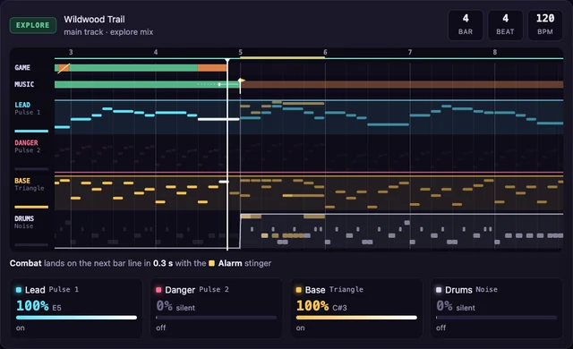
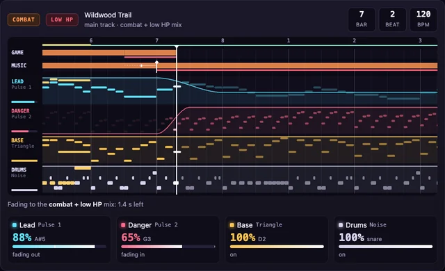
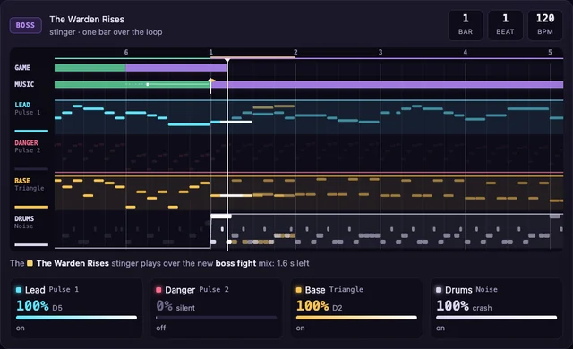
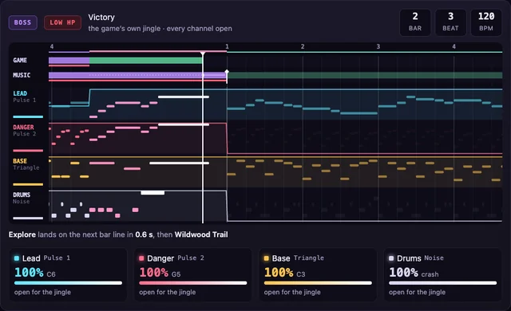

Adaptive music
Music that follows the game state, fading layers in and out on the bar line. An add-on for any game.
What it does
Layered music that follows the game's state over chip music: each chip channel is a stem (bass, drums, melody, a tense danger line), drums come in for fights, the danger line at low health, the boss gets its own track.
Made fortop-down adventure and action RPG (exploring, fights, a boss room)platformer and metroidvania with enemies and a bossdungeon crawler and rogueliketurn-based RPG with a field map and battle scenesany game with chip music and a hero with health
Moments
Four moments from the demo

Play from here
Play from here
Play from here
Play from hereTake it home
Hand it to your agent
- Copy the prompt. It is written for a game your agent has never seen.
- Give it the module (
adaptive-music.js) and its README. - Play your game. The prompt ends with checks your agent can run.
# Add Chip music and Adaptive music to my game Add the 2 game elements below to MY existing game, which you have not seen. Each is a finished module file given with this prompt: - `chip-music.js` (one global, `GameDNA_ChipMusic`), API reference `chip-music.README.md` - `adaptive-music.js` (one global, `GameDNA_AdaptiveMusic`), API reference `adaptive-music.README.md` README example names are placeholders. ## Shared premises 1. **Include each module file verbatim; never edit it.** Load it with its own `<script src>` before the game's script, or paste it unchanged into its own `<script>` tag. If a module seems to need a change, adapt my game around it and tell me. 2. **Resolution:** keep my game's native resolution and integer scaling as they are. Call module draw functions on my 2D context inside the same transform as my sprites (one module pixel = one game pixel), and keep my game's own image-smoothing setting (off for pixel art, on for smooth or HD games; never switch it). 3. **Time:** drive every module from one fixed 60 Hz step (1000 / 60 ms). If my loop uses variable delta time, accumulate it and run whole steps (at most 250 ms per frame). 4. **Coordinates:** native screen pixels (world minus camera) unless a section says tiles. 5. **Art and names:** anything new you draw or name is original (no real game, character, place or brand names); English UI text; do not restyle my game. 6. **Hook, don't replace:** add calls or change bodies; never delete or rename a function.Open the whole prompt
Works well with
Combine it
Also pairs well with
Draining HP barHP bars that drop at once, then drain a pale loss segment so every hit reads.
Toasts & unlock pop-upsItem, quest and achievement pop-ups that stack and merge without pausing.
Stamina & outpost restSquads tire as they march and fight, and rest at camps you hold.
Active-time gauge battleGauges fill in real time, so every turn feels urgent.
Four-move menu battle with type matchupsPick one of four moves; type matchups decide the damage.
Combat forecast windowSee damage, hit chance and counters before you commit.